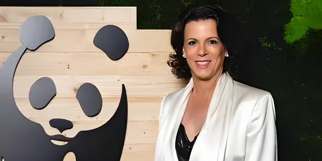

Le 28 mai 2026, Alexandra Palt a annoncé sur LinkedIn sa démission de la présidence bénévole du WWF France, qu'elle occupait depuis juin 2024. Derrière ce départ se cache un conflit de fond : sa participation à un rassemblement antiraciste à Saint-Denis lui avait valu d'être rappelée à l'ordre par le conseil d'administration au nom du principe d'apolitisme de l'organisation. Une démission qui divise le monde associatif et interroge le rôle des grandes ONG environnementales dans les combats de société.
Nommée le 18 juin 2024 par le conseil d'administration du WWF France, Alexandra Palt succédait alors à Antoine Housset. Juriste de formation, née à Vienne en Autriche, elle avait construit un parcours atypique mêlant droit international, droits humains et responsabilité d'entreprise. Après une collaboration avec Amnesty International et un passage à la Haute Autorité de lutte contre les discriminations et pour l'égalité (Halde) à partir de 2006, elle avait rejoint le groupe L'Oréal en 2012, où elle occupait les fonctions de directrice de la RSE et de membre du Comité Exécutif, ainsi que la direction générale de la Fondation L'Oréal.
Quittant L'Oréal en avril 2024 pour se consacrer à des travaux de recherche sur un « leadership décent face aux enjeux du XXIe siècle », elle avait accepté la présidence bénévole du WWF France quelques semaines plus tard. Sa nomination avait été saluée comme un signal fort : une dirigeante de grande entreprise, sensibilisée aux enjeux environnementaux et sociaux, à la tête de la première ONG de protection de la nature en France.
Tout commence le 4 avril 2026, lorsqu'Alexandra Palt se rend à Saint-Denis pour participer à un rassemblement contre le racisme, organisé à l'initiative de Bally Bagayoko, nouveau maire de la ville élu sous l'étiquette de La France insoumise (LFI). Elle publie le lendemain sur son compte LinkedIn un message évoquant sa présence, en mentionnant ses origines autrichiennes et ses convictions personnelles : être là, écrit-elle, était pour elle une nécessité.
Deux jours plus tard, elle reçoit un courriel signé par Isabelle Autissier, présidente d'honneur du WWF France et navigatrice renommée, et par Antoine Housset, administrateur — son prédécesseur à la présidence. Les deux signataires jugent la publication « inacceptable », estimant qu'elle compromet l'apolitisme de l'organisation. Le message soulève également la question des donateurs qui pourraient être froissés par cette prise de position, dans un contexte sensible.
« Il est apparu clairement que nous n'étions plus alignés sur des questions essentielles de valeurs et de conception du rôle d'une organisation comme le WWF dans la société contemporaine. »
— Alexandra Palt, LinkedIn, 28 mai 2026Le conflit ne restera pas confiné aux échanges de courriels. Le conseil d'administration du WWF France engage une procédure formelle de révocation d'Alexandra Palt, approuvée à l'unanimité de ses membres. Anticipant ce vote, elle annonce sa démission le 28 mai dans un post LinkedIn, expliquant partir avant même l'engagement officiel de la procédure de destitution. Elle invoque un « désaccord profond » sur « des questions essentielles de valeurs ».
Le WWF France, dans son communiqué du même jour, confirme prendre acte de la démission mais insiste sur un autre angle : l'existence de « dysfonctionnements managériaux » de la présidente au sein de l'organisation, en plus des prises de position jugées contraires au principe d'apolitisme. Le conseil d'administration annonce qu'il se réunira prochainement pour désigner une nouvelle présidence.
L'affaire relance une question ancienne et jamais vraiment tranchée : jusqu'où une organisation environnementale peut-elle — ou doit-elle — s'engager sur des combats qui dépassent son objet social strict ? Le WWF a toujours revendiqué une neutralité partisane, estimant que son efficacité auprès des gouvernements, des entreprises et des donateurs repose sur son indépendance vis-à-vis des clivages politiques. Cette ligne lui a permis de dialoguer avec des acteurs de tous bords, mais elle est régulièrement mise à l'épreuve par des crises qui, comme le racisme ou le changement climatique, ont des dimensions à la fois sociales et politiques.
Pour le conseil d'administration, la participation d'Alexandra Palt à un événement organisé par un maire LFI — parti souvent critiqué sur certaines positions — constituait une prise de risque pour l'image de l'organisation. Pour la présidente démissionnaire, en revanche, lutter contre le racisme relevait d'un engagement moral fondamental, indissociable des combats pour un monde durable.
La démission d'Alexandra Palt a provoqué une vague de réactions dans le monde des ONG et des organisations environnementales. Dans les commentaires de son post LinkedIn, plusieurs figures de proue du secteur ont pris sa défense. Claire Nouvian, fondatrice de l'ONG de protection des océans Bloom, a dénoncé le choix du WWF en termes sans équivoque. Antoine Gatet, président de France Nature Environnement (FNE), a, lui, soutenu que combattre les discours racistes et de haine était un devoir qui accompagnait naturellement les luttes pour un monde vivable.
Ces soutiens illustrent une fracture profonde dans le monde associatif français entre une conception strictement sectorielle du rôle des ONG et une vision plus globale, qui considère les inégalités sociales et le racisme comme indissociables des crises environnementales. Ce débat, loin d'être anecdotique, touche à des questions de stratégie, de légitimité et d'identité pour des organisations qui cherchent à influencer les politiques publiques tout en préservant leur capacité d'accès à tous les acteurs.
« Rester indépendant des partis politiques est une chose. Combattre l'illibéralisme, les discours racistes et de haine, lutter pour l'égalité, est un devoir qui accompagne évidemment nos luttes pour un monde vivable. »
— Antoine Gatet, président de France Nature EnvironnementNomination d'Alexandra Palt à la présidence bénévole du WWF France, succédant à Antoine Housset. Elle apporte son expertise en RSE acquise chez L'Oréal (2012–2024).
Alexandra Palt participe à un rassemblement antiraciste à Saint-Denis, organisé par le maire Bally Bagayoko (LFI). Elle relate sa présence le lendemain sur LinkedIn.
Isabelle Autissier et Antoine Housset lui adressent un courriel jugeant sa publication « inacceptable » au regard du principe d'apolitisme du WWF.
Alexandra Palt annonce sa démission sur LinkedIn. Le WWF France publie un communiqué confirmant la procédure de révocation approuvée à l'unanimité du CA, et annonce la désignation prochaine d'une nouvelle présidence.
La crise du WWF France s'inscrit dans un questionnement plus large sur la place des grandes organisations environnementales dans les débats de société. Fondées sur un modèle de neutralité partisane destiné à préserver leur efficacité, ces organisations sont de plus en plus confrontées à des crises — racisme, inégalités, démocratie — que leurs militants et dirigeants ne peuvent ignorer. Le départ précipité d'Alexandra Palt laisse le WWF France sans présidence dans un contexte international tendu, alors que la biodiversité et le climat exigent des mobilisations toujours plus larges. La question de savoir qui peut incarner une ONG environnementale crédible, engagée et indépendante, est désormais posée publiquement.